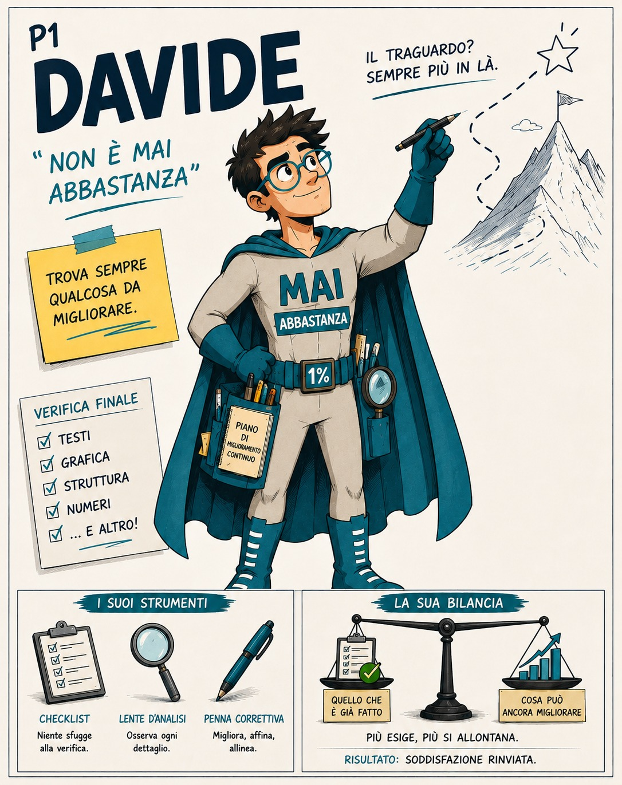

Davide — P1
“Non è mai abbastanza”
Trova sempre qualcosa da migliorare. Quando il lavoro è pronto, sposta il traguardo un po’ più in là.
 COACH · TRAINER · MENTORE
COACH · TRAINER · MENTORE

EPiC / ARCHETIPI
Pattern estremi, supereroi improbabili e dinamiche molto reali.
Gli Archetipi EPiC trasformano i Pattern in personaggi volutamente esagerati. Non descrivono persone. Rendono visibili movimenti ricorrenti, così diventano più facili da riconoscere, ricordare e distinguere.
Incontra gli eroiPERCHÉ FUNZIONANO
Un Pattern spiegato resta un concetto. Un personaggio che lo porta all’estremo diventa difficile da dimenticare.
Per questo gli Archetipi EPiC sono strampalati, netti e perfino un po’ assurdi. Non cercano di rappresentare una persona intera: isolano una dinamica e la rendono visibile.
“Qui sta arrivando Giulia.”
“Questo è proprio da Davide.”
“Andrea lo farà domani.”
Nel gruppo di lavoro ha già iniziato a succedere una cosa interessante: non chiamiamo più soltanto i Pattern per sigla. Chiamiamo direttamente i personaggi. Quando un Pattern acquista un volto, diventa più facile notarlo prima che governi la scelta.
LA LEGA
Davide — P1
Trova sempre qualcosa da migliorare. Quando il lavoro è pronto, sposta il traguardo un po’ più in là.
Andrea — P5
Conosce perfettamente il costo di ogni azione. E trova sempre un momento migliore per iniziare.
Giulia — P6
Trasforma una scelta semplice in un sistema di variabili. Si muove moltissimo, ma solo nella propria testa.
Chiara — P10
Cerca fuori il criterio che non riesce a sentire dentro. Capisce dove si trova attraverso il giudizio degli altri.
DAVIDE IN AZIONE
Davide non vuole fare male il lavoro. Vuole continuare a migliorarlo.
Il problema è che la soglia si sposta ogni volta che sta per raggiungerla.


Trova sempre qualcosa da correggere.
La chiusura viene rinviata.
“Non è ancora pronto.”
Il problema non è la qualità. È una soglia che non viene mai dichiarata.
NON SONO ETICHETTE
Gli Archetipi EPiC non definiscono chi sei. Mostrano come il sistema si sta muovendo in una situazione.
La stessa persona può assomigliare a Davide in un progetto, a Giulia in una scelta e ad Andrea davanti a una telefonata difficile.
Il personaggio serve a vedere il Pattern. Non a incollare un’etichetta alla persona.
L’Archetipo non è un tipo umano, ma un movimento ricorrente del sistema.
CHIUSURA
Gli Archetipi rendono i Pattern più visibili. EPiC aiuta a capire quale leva usare e in quale momento.
Il personaggio fa sorridere. La discriminazione fa la differenza.
Scopri come lavoriamo sui Pattern